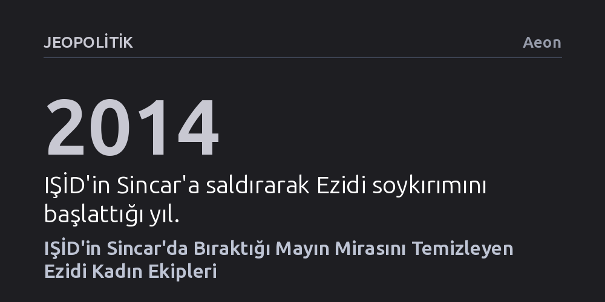

JEOPOLITIK · Aeon · 2026-10-15
Sincar'da IŞİD soykırımından kurtulan Ezidi kadınlar, çocuk oyuncaklarına ve evlere tuzaklanan patlayıcıları temizleyen ekipler kurarak topraklarını yeniden inşa ediyor. Hana Khider liderliğindeki bu mücadele, travmanın ardından toplumu ayağa kaldırmanın hayati bir parçasını oluşturuyor.
Soykırım mağduru kadınların yalnızca pasif kurbanlar değil, topraklarını ölümcül patlayıcılardan arındırarak toplumsal yeniden inşayı bizzat sırtlayan öncüler olduğunu gösteriyor.

Ağustos 2014'te IŞİD'in Irak'ın kuzeyindeki Sincar bölgesine saldırması, tarih boyunca baskılara maruz kalmış Kürtçe konuşan dini ve etnik bir azınlık olan Ezidiler için büyük bir yıkımın başlangıcı oldu. Örgüt, inançları nedeniyle Ezidileri hedef alarak binlerce erkeği katletti; binlerce kadın ve kız çocuğunu ise köleleştirdi. Uluslararası alanda açıkça bir soykırım olarak kabul edilen bu vahşet, yalnızca insan hayatını doğrudan hedef almakla kalmadı, halkın bir daha yurtlarına dönememesi için hesaplanmış bir stratejiyle birleşti.
IŞİD çekilirken geride geniş çaplı ve sinsi bir patlayıcı mirası bıraktı. Bu patlayıcılar sadece yollara veya arazilere döşenen standart askeri mühimmatlar değildi. Evlerin içine, gündelik mutfak eşyalarına ve hatta çocuk oyuncaklarının içine gizlenmiş el yapımı patlayıcılar, savaştan sonra evine dönmeye çalışan sivilleri katletmek üzere tasarlanmıştı. Dolayısıyla bölgenin fiziki ve psikolojik olarak yeniden ayağa kalkabilmesi, öncelikle bu görünmez ölüm tehdidinin ortadan kaldırılmasına bağlı hale geldi.
Yaşanan büyük travmanın ardından, Sincar topraklarını yeniden güvenli kılma görevini alışılmadık bir ekip üstlendi: Tamamı Ezidi kadınlardan oluşan bir mayın temizleme timi. Mines Advisory Group (MAG) bünyesinde çalışan ve kendisi de bir Ezidi olan Hana Khider, bu ekibin liderliğini yürütüyor. Mayınların Yasaklanması Uluslararası Kampanyası'nın kurucu üyelerinden olan ve 1997 Nobel Barış Ödülü'nü paylaşan MAG, bölgede en riskli arama ve imha operasyonlarını sürdürüyor.
Kadınların yürüttüğü bu tehlikeli operasyonlar, milimetrik bir dikkat ve sarsılmaz bir soğukkanlılık gerektiriyor. Gündelik nesnelerin ardına gizlenen patlayıcıları tek tek tespit edip etkisiz hale getiren ekip, bir yandan ölümle burun buruna çalışırken diğer yandan savaşın parçaladığı yaşam alanlarını adım adım temizliyor. Çocukların güvenle sokakta oynayabilmesi ve ailelerin terk ettikleri evlere dönebilmesi, tamamen bu kadınların yere çömelip toprağı santim santim taramasına dayanıyor.
İngiliz yönetmen Orlando von Einsiedel'in "Into the Fire" adlı kısa belgeselinde aktarılan bu süreç, mayın temizliğinin yalnızca teknik bir mühimmat imha işi olmadığını gözler önüne seriyor. Film, Hana Khider'in arazideki ölümcül mesaisi ile bir anne ve eş olarak sürdürdüğü ev hayatı arasındaki geçişleri izleyerek, toplumu iyileştirmenin iki temel yüzünü bir araya getiriyor. Khider'in hikayesi, hem ailesine kol kanat geren bir kadının şefkatini hem de tüm topluluğun geleceğini korumak için patlayıcıların üzerine yürüyen bir uzmanın cesaretini yansıtıyor.
Nobel Barış Ödülü sahiplerinin süregelen etkisini inceleyen belgesel serisinin bir parçası olan bu yapım, geçmişin ağır şiddetine karşı verilen en somut direnişi simgeliyor. Kurban kimliğine hapsolmayı reddeden Ezidi kadınlar, bizzat mayınları etkisiz hale getirerek geçmişin yıkıntılarından yeni bir gelecek kuruyorlar. Bu çaba, adalet ve iyileşmenin yalnızca mahkeme salonlarında değil, doğrudan temizlenen topraklarda ve yeniden inşa edilen gündelik hayatta filizlendiğini kanıtlıyor.